Camera should install perfectly first time & every time!
If you have any issues installing your theme:
Solving Broken Theme/Stylesheet Missing WordPress Theme Issues
To install your theme in WordPress you must navigate to the menu "Appearance" on the left and then the submenu "Themes". From that page you should see your current theme "Twenty Eleven" by default OR whatever theme you currently have. Now click the "Install Themes" tab and then the text button at the top "Upload". You then should click Choose File and find your theme files on your computer and upload them. Note: You are only uploading the folder "CameraWPTheme.zip" Your final step is to "Activate" your theme.
This process is shown in the images below
 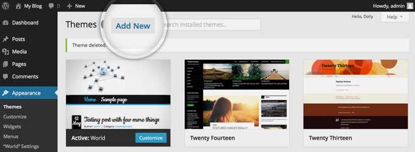
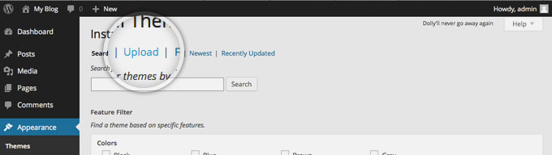
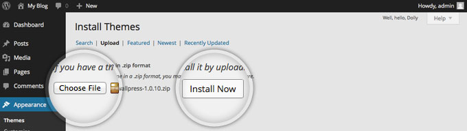
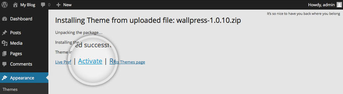
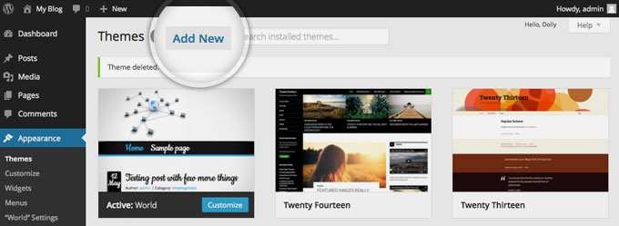
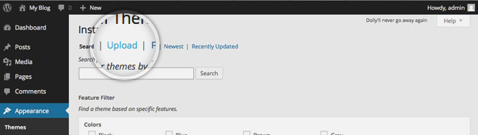
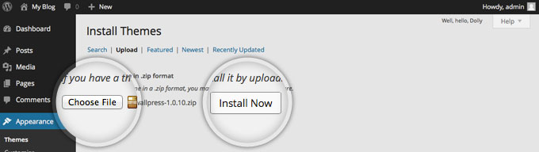
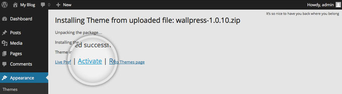
This is a required step in the theme setup, both for proper theme operation, and great SEO.
By default the pagenames will be website.com/p15 instead of website.com/about.
To fix this go to "Settings" > "Permalinks" and change to "Post Name". After choosing "Post Name", Click "Save Changes" and your done. Your urls will now display a proper Permalink structure.
If you get 404 errors on any posts or pages, come back here and set your permalinks to "default", if the errors then go away it means your server has URL rewriting issues. Switch to a default theme to see the same behaviour. You should then contact your webhost support team regarding this.
A Number of theme features come as external plugins to make your life easier if you ever switch themes. These need installing before importing the demo data for proper theme operation.
When you first install the theme you'll see a popup on your dashboard from the theme asking you to install a number of plugins.
Allow the theme to install these for you, it will add custom post types, a page builder, a portfolio post ordering plugin and a custom crop featured image plugin.
 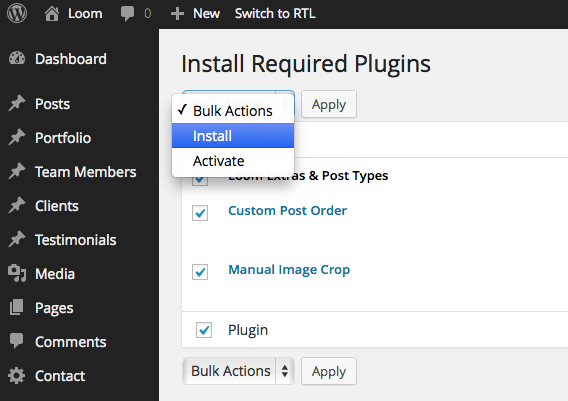
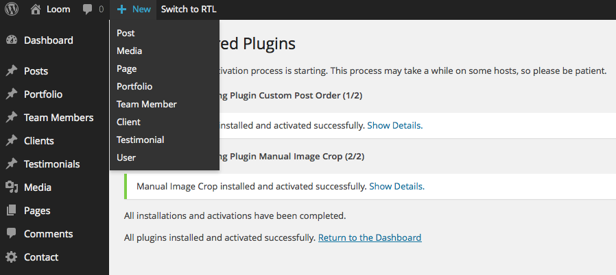
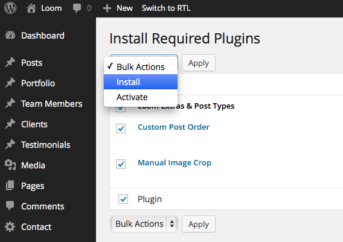
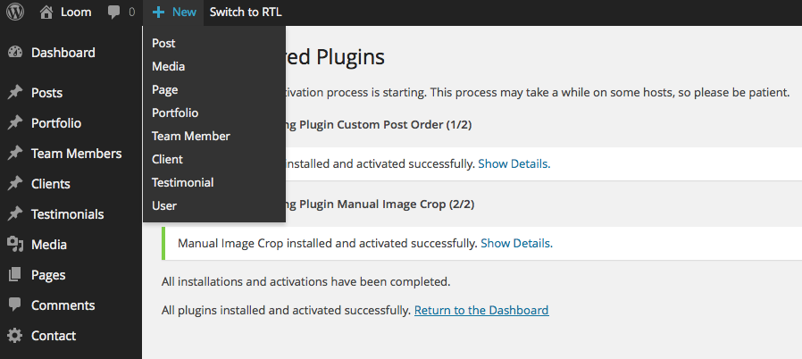
Seriously, make sure these are all installed before importing demo data, you'll only cause yourself problems if you install the demo data first and do this second.
If this method returns any errors, you must use the fallback demo import method (next section). This auto method can return errors depending on your server setup, 9 times out of 10 this method is perfect, remember, there is a fallback if this fails.
To use demo demo data installer go to "appearance" => "customise" from your WP Dashboard. Inside the customiser (this is also the theme options panel, you can modify loads about the theme from here) click on the "Import Demo Data" tab. Next click the "Import Demo Data" Button, a backup prompt will appear, click OK when you're ready on this, and then leave your install until you get a successful message. This process takes up to 15 mins. Do not do anything during this process!.
Developers: If you have wp_debug set to true, this process will fail, set to false whilst importing demo data.
After importing the demo data, you're about 5 mins away from a perfect demo setup. Please now follow the steps in "Initial Theme Setup" for the final steps to take.
I have created a folder labeled "Demo XML Data" which contains an export for the Live Preview. The place to upload this XML file is in WordPress under Tools > Import.
Once you've arrived on the Import page, you will click on the "WordPress" link: Wordpress - Install the WordPress importer to import posts, pages, comments, custom fields, categories, and tags from a WordPress export file.
The first time you do this you will get a pop-up prompting you to install the "WordPress Importer". You will need to click "Install Now". Then You will have installed the plugin and need to click "Activate Plugin & Run Importer".
From here you will just need click "Choose File" and select the demo-data.xml file. Then click "Upload file and import".
You will then be prompted to Assign Authors. You can read the description at the top as this explains everything. Note: Make sure you Import Attachments.
Check the box "Download and import file attachments". This will download attachments for images included in the Live Preview demo.
You now just need to wait for the importer to finish. This might take a few minutes depending on your hosting server speed.
After importing the demo data, you're about 5 mins away from a perfect demo setup. Please now follow the steps in "Initial Theme Setup" for the final steps to take.
This is a required step after importing demo data and installing require plugins. This is the final step to producing the same site as my theme demo.
From your WP Dashboard go to "settings" => "reading" and click the "static homepage" option. Let's set the "home page" to any of the "home layout" pages, and let's set the "posts page" option to "blog", once you've done this hit the save changes button. You now have a proper homepage, and a proper blog page, nice one :)
Now the last step. Go to appearance -> menus and set the theme menus in place. Use the checkboxes at the bottom of the menus to set them in location. Set the main menu into the primary location.
Camera is a one-page WordPress theme, anything mentioned in this paragraph is mentioned in further detail in this documentation.
Camera is very simple to use, and operates under the usage of the Ebor Template Builder. To use Camera , we first publish 2 pages, one called Home which we give the Page Builder - Single Page template. Next one called Blog.
In Settings => Reading we set home to be the homepage, and blog to be the posts page.
Next we start building the sections of the homepage, to do this you need to go to "appearance" => "ebor template builder" and use the blocks to begin constructing the sections of your page.
In the page builder you can assign each block to "sections", these sections are the links in our navigation menu that animate between as we use the site navigation.
This section covers the usual bugs that can happen with improper theme setup, read carefully if you have any issue after demo import & theme setup.
Demo data installed correctly, but there's no imges? You either forgot to import attachments when installing demo data, or your server is configured to not allow incoming attachments. You'll need to go through the theme, posts, portfolios and set featured images accordingly.Demo data installed, but my pages are blank? Go to your site homepage, and click the edit page button. Inside you page content you will have a shortcode similar to this: [template id="117" Business Style] - Now click the "add template" button, and choose & insert the option with the matching name. If the second inserted shortcde has a different ID value to that of the first then you should delete the first shortcode, leaving the second in place and then click the update button for the page. This is because your server has reassigned the page template IDs from our demo data.No Menus?! Help! This is simple, go to appearance -> menus and set your registered menus to a theme location.I'm getting 404 errors on posts & pages. See the permalinks section of this documentation.All options for the theme are found within the WordPress theme customizer, from here you can change logos, colours, loads of stuff!
When you've done making changes, be sure to click the Save Changes button to apply your modificaitons to the front end of the site.
Head to the theme options and open the header settings & logo area, use the appropriate logo controls within.
The recommended logo height for the theme is 52px, width can be anything but remember that the logo may bump into your navigation if it's width is too high.
Your retina logo needs to have @2x on the end of the filename. Because of the way WordPress handles media attachments, make sure your logo filenames are truly unique so that the retina logo can be swapped properly.
To modify fonts & fonts colours, you'll want to install the Easy Google Fonts plugin, it's fantastic.
Advanced: for very specific font control, you can add additional selectors to the plugin if you need to. To do this have a watch of this video:
Keep your font choices as minimal as possible, the more fonts you're using, the slower your page load will be. You have been warned.
This section applies mainly to blog posts, portfolio posts should be limited to the gallery, image, video, auto & standard post formats. Testimonials and team do not have post type support.
For a brief overview of what post formats are, See Here. Note that we don't include all post formats in Camera.
All the post formats are very self explanatory, so let's cover some of the main ones:
Standard Post Format - Uses the featured image for index & archives, but does not show this on the single post.Image Post Format - Uses the featured image for some index & archives, shows any images set in the "gallery upload" area at the top of your posts. This format is directly interchangeable with the Gallery Post FormatGallery Post Format - Does exactly the same as the image post format, but provides an image slider rather that multiple images.Video Post Format - Provides additional inputs for you to add video embed URLs, see the details noted in the video format input area for supported services.A single portfolio post represents a singular image within the portfolio post feeds on the site. Portfolio posts are automatically show at /portfolio/ on your site, though you can use the page builder to add these to a page instead.
Portfolio posts function exactly in the same way as blog posts. Any additional features of a portfolio post can be modified in the additional portfolio settings section underneath the WP Editor when making a portfolio post, take a look through these options, and make a mental note of what they offer.
Each Portfolio post MUST have a featured image set. This image should be a minimum of 440px X 330px and should have a maxiumum width of 2000px
To change the layout of a portfolio post from full width to left/right, just use the portfolio layout control in the additional portfolio settings.
It's very likely you'll want deeper control of how the theme crops your featured images to be shown in the main portfolio feeds. If you installed the plugins recommended by the theme, then you're ready to do this. After you've set your featured image, click the crop image link underneath remove featured image, a window will pop-up. With the window open, choose the portfolio tab and then adjust and crop your image. Finally update your post. When you take a look at your site, if the image has not updated clear your browser cache!
Team posts are automatically show at /team/ on your site, though you can use the page builder to add these to a page instead.
Team posts work just like blog posts, but have no post formats. Ensure each team post has a featured image set. You'll also want to set a job title, and some social icons for each team member using the additional inputs underneath the WP Editor/
Testimonial posts have no single view, and do not make use of the featured image. Set the testimonial author as the post title, and add the testimonial to the post content. They can be added to your pages using the Testimonial elements in the page builder.
The Page Builder is really easy to use. Head to "appearance" => "Ebor Template builder" and enter a name for a new template. You can then drag and drop blocks in from the left. Each block explains itself, some blocks are resizable by grabbing the edge of the block and pulling it to the right or the left.
The Page Builder uses shortcodes to add itself to pages. You can add those shortcodes by going to the post or page you want to add your newly created page template to, click the 'add template' button which is next to your 'add media' button, and click the name of the template you want to add. This will add a shortcode to your page, save and publish your page and all your content will be loaded in.
Please read all of the following, a link to my ticket service is provided at the end of this section.
Any ticket relating to customisation will be politely forwarded to -- http://www.madeinebor.com/customisations/ -- and then your ticket will be closed.
I run support Weekdays 9am - 5pm GMT. You can expect a response within 12 - 48 hours, Monday to Friday unless there is a national holiday. Here is a list of UK national holidays: https://www.gov.uk/bank-holidays. Note that "bumps" to tickets put you to the back of my queue, be patient, every ticket is answered promptly.
What my tickets are for:
Help using theme features, Help setting up / installing themes, bug reports & reasonable feature requests for future updates.
What my tickets aren't for:
Any issues relating to 3rd party plugins not recommended by the theme, theme customisations, or theme changes your client requires.
What counts as customisation?
If you want to change the appearance or functionality of the theme by editing or extending the theme's code, then that is customisation, and will not be supported through my tickets. Likewise if your client has a function request that does not exist in the theme, my tickets are not the place to have the theme extended for this.
Do you need customisation work?
If that's exactly what you're here for, you can fill out a custom work form here; http://www.madeinebor.com/customisations/
Things to check when leaving a ticket:
A quick point on theme support: All of my themes are tested and thoroughly scrutinised by themeforest support staff and are confirmed 100% working, if you're having any issues you should be 99.9% sure it's a user error, or a bug I will be happy to fix with you. With this in mind, please keep your tone calm & professional, you will always get the same from me. Any tickets left with vulgar language, or with threatening, unprofessional language will be promptly closed and/or deleted. All tickets left with a calm, professional tone will receive awesome support, as always.
If you've read, accepted, and followed the steps above, click here to leave a ticket.